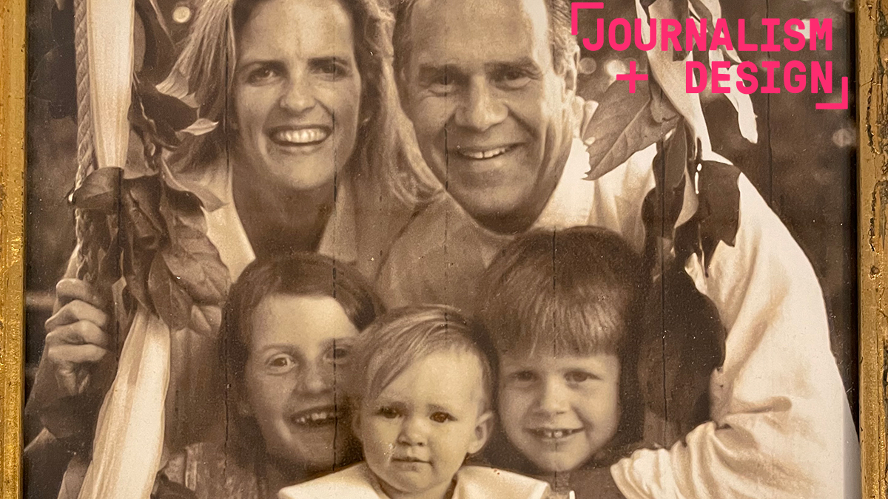
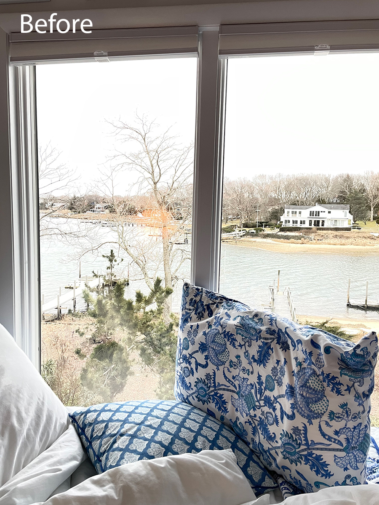
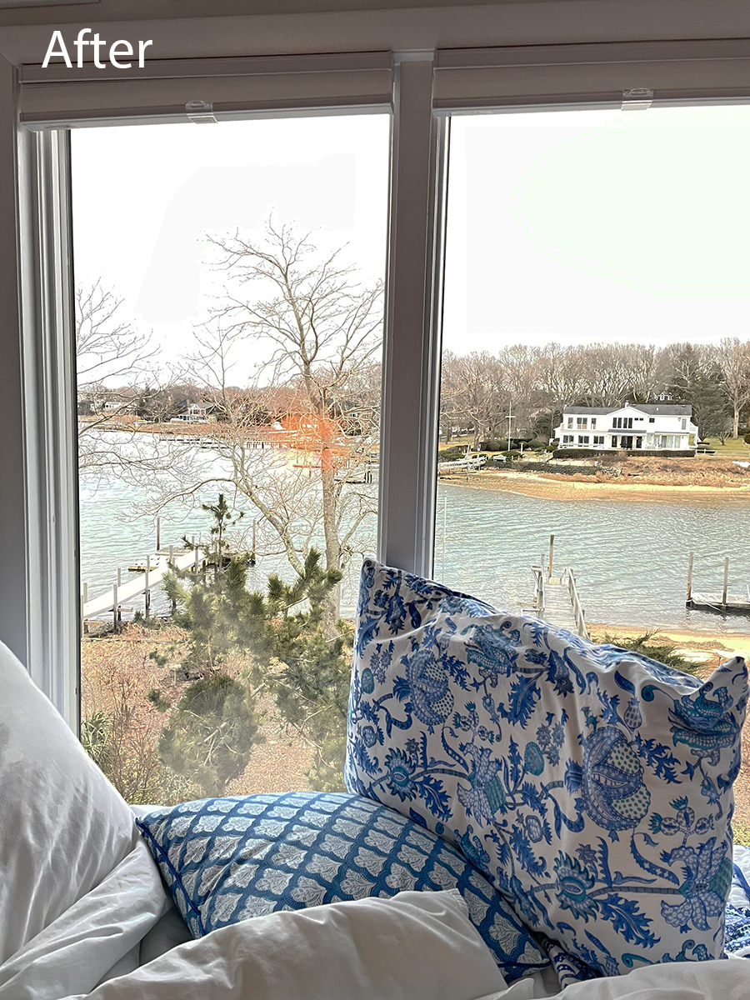
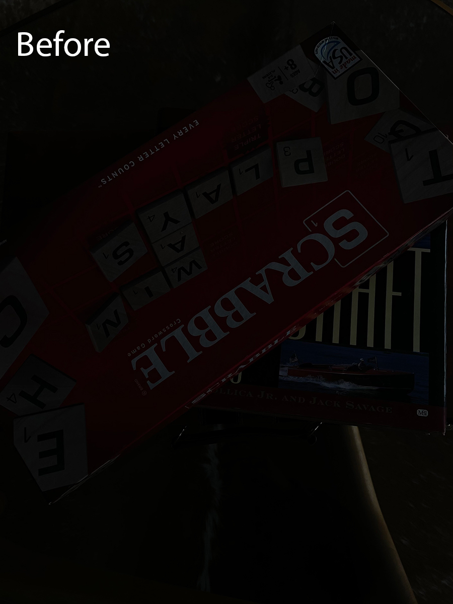
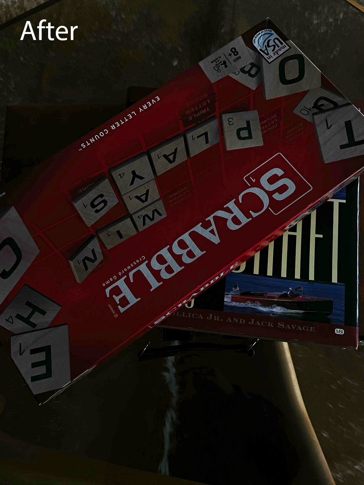
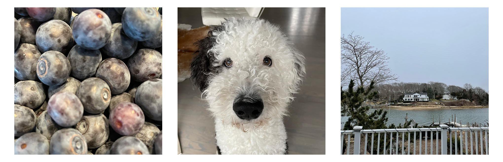
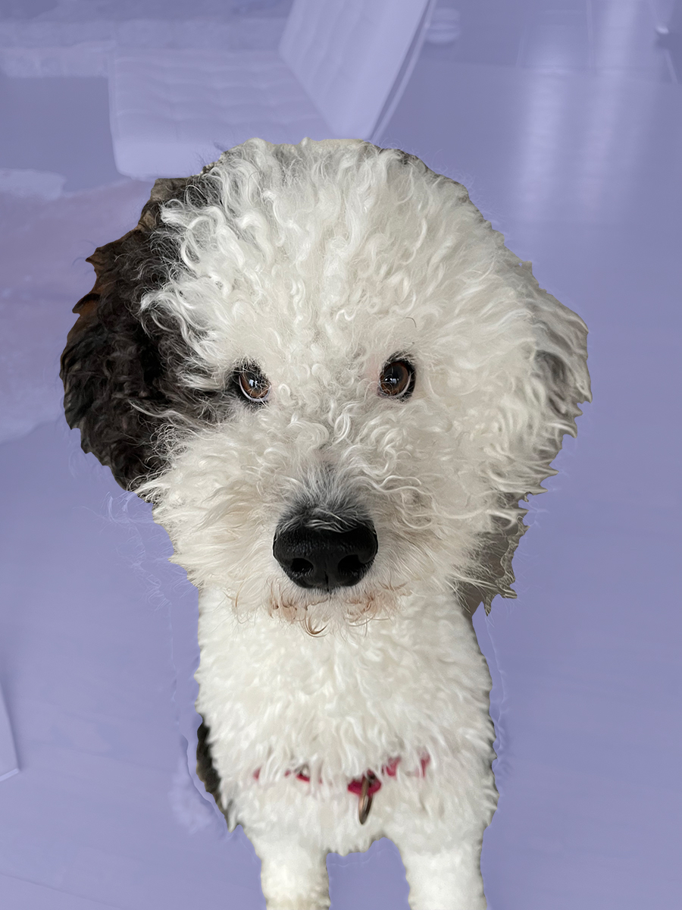

This was the first subpage I created. This subpage displays five photos that I was instructed to take from one source image, along with an assignment that instructed me to edit photos in Photoshop.



This is my group image
This is my original overexposed image
This is my fixed overexposed image
This is my original underexposed image
This is my fixed underexposed image
This is my banner
This is my attempt at a crazy creative image